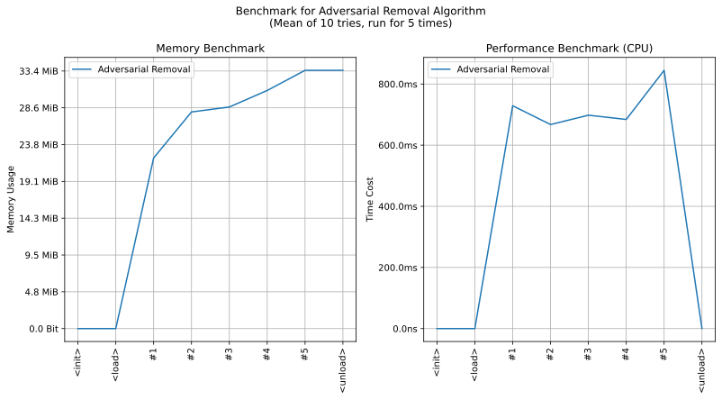

imgutils.restore.adversarial¶
- Overview:
Useful tools to remove adversarial noises, just using opencv library without any models.

This is an overall benchmark of all the adversarial denoising:
Note
This tool is inspired from Huggingface - mf666/mist-fucker.
remove_adversarial_noise¶
-
imgutils.restore.adversarial.remove_adversarial_noise(image: PIL.Image.Image, diameter_min: int = 4, diameter_max: int = 6, sigma_color_min: float = 6.0, sigma_color_max: float = 10.0, sigma_space_min: float = 6.0, sigma_space_max: float = 10.0, radius_min: int = 3, radius_max: int = 6, eps_min: float = 16.0, eps_max: float = 24.0, b_iters: int = 64, g_iters: int = 8) → PIL.Image.Image[source]¶ Remove adversarial noise from an image using random bilateral and guided filtering.
This function applies random bilateral filtering and random guided filtering iteratively to reduce adversarial noise in the input image.
- Parameters:
image (Image.Image) – The input image.
diameter_min (int, optional) – Minimum diameter for bilateral filtering.
diameter_max (int, optional) – Maximum diameter for bilateral filtering.
sigma_color_min (float, optional) – Minimum filter sigma in the color space for bilateral filtering.
sigma_color_max (float, optional) – Maximum filter sigma in the color space for bilateral filtering.
sigma_space_min (float, optional) – Minimum filter sigma in the coordinate space for bilateral filtering.
sigma_space_max (float, optional) – Maximum filter sigma in the coordinate space for bilateral filtering.
radius_min (int, optional) – Minimum radius for guided filtering.
radius_max (int, optional) – Maximum radius for guided filtering.
eps_min (float, optional) – Minimum guided filter regularization term.
eps_max (float, optional) – Maximum guided filter regularization term.
b_iters (int, optional) – Number of iterations for bilateral filtering.
g_iters (int, optional) – Number of iterations for guided filtering.
- Returns:
Image with adversarial noise removed.
- Return type:
Image.Image
-